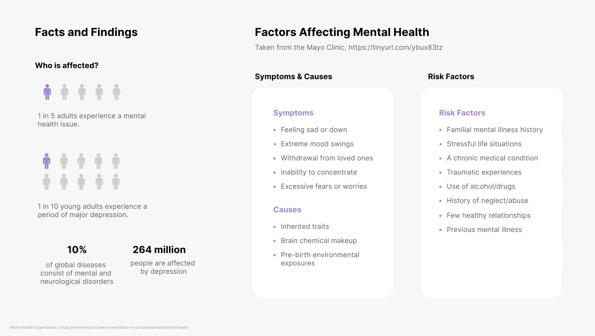
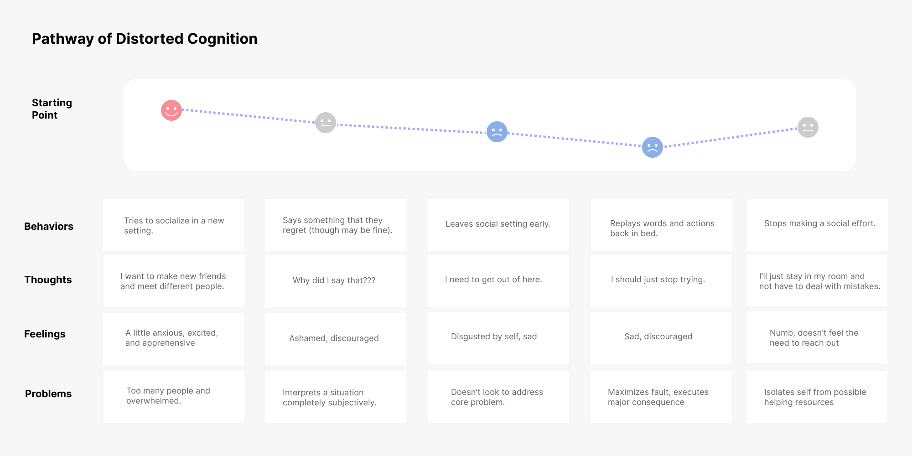
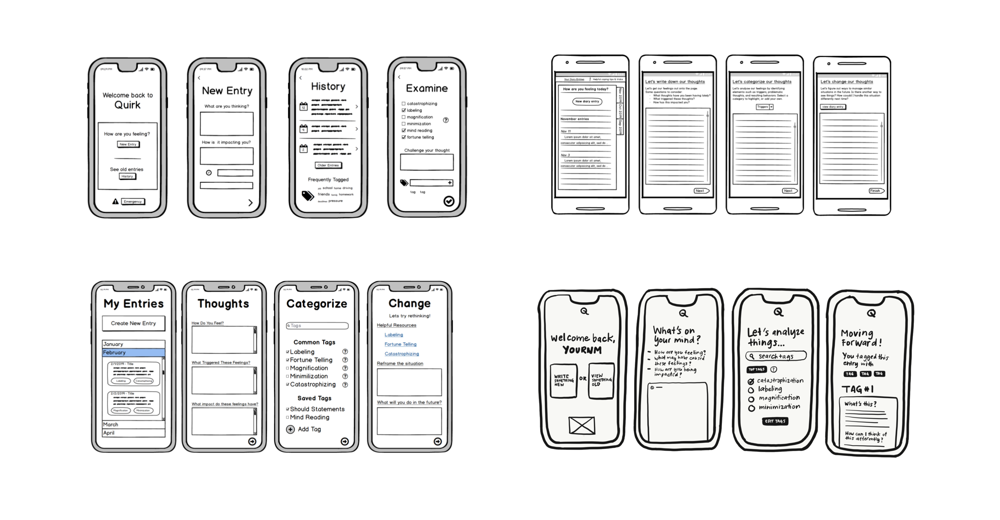
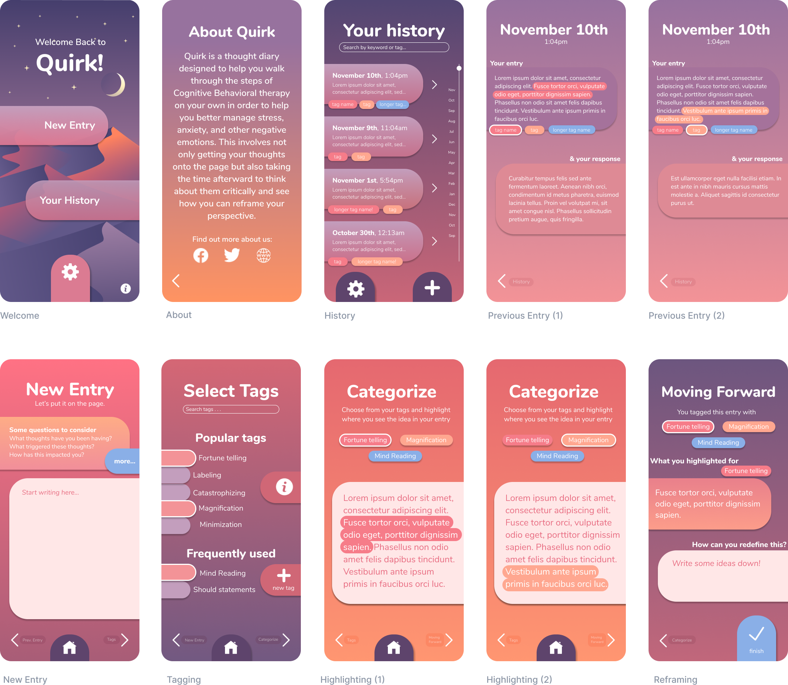

Previous Entry
Users can easily access previous entries, as well as their tags and their responses to each specific tag. Alternating tags allow for a consolidated view of what they wrote.

Our overall goal, as detailed by our instructor, was to design the interface of a startup’s mobile application with only the understanding of the company’s objective and no previous knowledge of the appearance or functionality.
Quirk is an app that was pitched at the YCombinator's S19 Demo Day. Described as a "thought diary" that helps to stop panic attacks by using the concepts of Cognitive Behavioral Therapy, Quirk acts as a journal and a platform for self-accountability and improvement.
On a national level, mental health awareness has skyrocketed over the last decade. To understand the issue more deeply and the obstacles currently challenging future endeavors, I researched how mental health affects people worldwide.
 1. Everyone struggles with mental health. The user base could range from someone in elementary school to a senior citizen, so our product needs to be simple and straightforward.
2. Mental health covers a lot of ground, so our solution needs to break Cognitive Behavioral Therapy into both digestable and comprehensive steps.
3. Mental health issues are private! As a result, our solution has an ethical duty to keep all data and entries secure.
Our solution is Quirk: a mobile journaling application for self-accountability and improvement.
To build a product based on real-life user input, we tested and designed the interface in iterative steps. Through a rapid prototyping process, we were able to produce mocks that could be easily improved and tweaked according to user research and testing.
Wireframing: To get input from all four designers working on this project, we each created a set of wireframes of the main screens and worked to consolidate the preferred features of each into one cohesive sketch.
First iteration: Features included a highlighting system for categorization, tagging abilities, and large icons for easy accessibility.
 After walking through an interactive prototype in front of a TA and our classmates, we established three main challenges to tackle in our next iteration.
1. Improving readability.
We needed to provide greater contrasts
between background and text so users could enjoy more efficient and effective interactions.
2. Enabling sharing.
To encourage seeking help, we decided to
give users the option of sharing entries with therapists or any other chosen contacts.
3. Providing privacy.
Because of the private nature of the app's
content, we added a PIN-enabled lock screen that users could control according to their discretion.
Based on the challenges we compiled, we made changes to the interface. The resulting second high-fidelity prototype is displayed below, complete with new additional lock screen and sharing pages.

To assess the usability of our interface and its features, we used the site UserTesting.com through which remote participants tested our product according to a few guiding questions we created beforehand. We hypothesized that our interface was simple enough that most users would complete it fairly quickly and without too much difficulty. Our testing results supported our hypothesis, as displayed below.

Users can easily access previous entries, as well as their tags and their responses to each specific tag. Alternating tags allow for a consolidated view of what they wrote.
To reinforce the habit of effective tagging, we created a simple system for users to match their words with cognitive distortion labels. This helps users to recognize where their thinking strays from accurate truths.
A straightforward history page allows users to access past entries and also see what they tagged their thoughts with. To avoid making the page too cluttered, we based the design off of the iOS contacts structure for easy scrolling.
Although privacy is important, we also realized the value of sharing entries when needed. Implementing a sharing page encourages users to seek the help they need from loved ones and trusted therapists.
Working on Quirk led me to think about how to best break down a broad, far-reaching topic (dealing with negativity) into digestible steps that are easy to follow. Moving forward, I will be taking the concepts of this project and applying them to my research on tackling cognitive distortions through interactive journaling with UCLA's HCI Lab. (For more on that project, please stay tuned!)